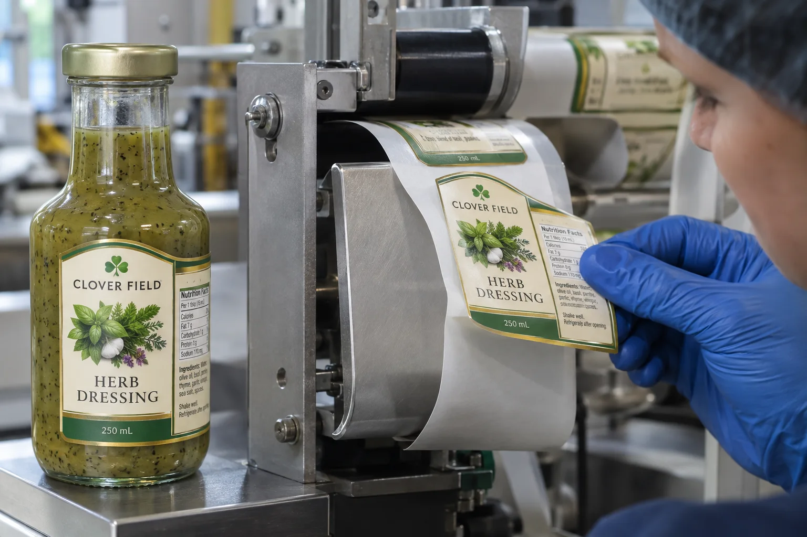

Two release reports show different force numbers. The buyer asks for the lower one because the line has trouble dispensing. Before ranking them, the team needs to know whether the measurements describe the same separation and conditions.
Make the release-report method and specimen comparable, then connect the result to the actual dispensing question. A low number is not automatically a better roll, and neither number describes the later bond to the bottle.

AI-generated illustration retained on this article only. Fictional packaging, equipment and details; no measured result or actual customer/factory record.
Ask what the reported result represents
Keep the report with its specimen identification and stated test method. If a supplier provides only a number in an email, request the missing context before treating it as an order requirement.
| Report field | Comparison question |
|---|---|
| Separation | Is this release from liner or adhesion to a package? |
| Specimen | Does the tested face/adhesive/liner match the proposed roll? |
| Method | Is the procedure identified, with relevant version and conditions? |
| Rate and geometry | Were the measurements made under comparable conditions? |
| Conditioning/age | What material history does the specimen represent? |
| Units/result form | Are width basis, reported units and result treatment compatible? |
Do not convert or normalize a reported value without knowing its basis. Ask the testing provider to interpret a method difference. This guide does not reproduce a test standard or assign an acceptable release range.
Keep laboratory comparison separate from line suitability
Smithers' release-testing overview explains that both very low and high release can create processing problems and identifies a low-speed test method. That supports identifying the actual test; it does not make one method a substitute for relevant application evidence on every line.
If a proposed construction has a different release result, ask how it will be evaluated on the intended dispensing setup. Identify the sample roll, web path and observations through the equipment owner's approved trial. The purpose is to relate a measured property to the operating requirement, not to tune machinery from a web article.
Resolve a conflict before changing the purchase specification
If reports are not comparable, keep them as separate evidence rather than declaring a material winner. If they are comparable but the line result differs, preserve the specimen and operating history for investigation. A report may be correct while the sample does not represent the supplied roll or the relevant line condition.
Use the liner-construction comparison for backing choices, die-cut liner inspection for web integrity and roll-storage record for history. None establishes the complete cause from a force value alone.
There are two separations in this purchase
Pressure-sensitive labels must leave the release liner and then stay on the package. Buyers often describe both as a glue problem. A buyer could separate them on the workbench: what happens at the peel plate, and what happens after the label contacts the bottle?
Smithers explains release-force testing as measuring the force needed to separate a pressure-sensitive material from its release backing. Too high a release force can interfere with dispensing; too low a force can permit premature separation. That measurement is not the same as the label's adhesion to glass or plastic.
A dressing line that looks like an adhesive complaint
Consider a composite buyer packing herb dressing into glass bottles. Finished bottles keep their labels through handling, but the automatic applicator intermittently carries a label past the peel point. The buyer asks for a stronger adhesive, assuming the label is not 'sticky enough.' A buyer could pause: stronger bond to the bottle does not tell us why the label stays on its liner.
In another composite operation, labels lift from chilled bottles after application while the roll dispenses cleanly. Here liner release is not the leading issue. Package temperature, moisture, surface condition and adhesive suitability need review. The symptoms may arrive in the same email, but the remedies should not be bundled.
Use the failure point to choose a test
| Observed problem | First comparison | Possible interface |
|---|---|---|
| Label remains on backing at peel point | Sound and failing rolls on the same setup | Release system or dispensing setup |
| Label lifts before peel point | Roll path, winding and retained stock | Premature liner separation |
| Label applies but later lifts | Good and failed packages after storage | Package bond or application conditions |
| Matrix pulls labels during converting | Die pattern and retained web | Converting plus release interaction |
These are investigation routes, not diagnoses from one photograph. Keep the roll identification, an unused strip and labeled packages. Note the application speed and where the defect first appears. The line supplier can check the equipment; the converter and stock supplier can evaluate the release construction.
Do not mix test numbers from different methods
Release tests depend on the specified test method and conditions. A number reported without speed, sample conditioning and construction is not a transferable purchasing target. Ask for a method appropriate to the material, and compare like with like. The final decision still needs a dispensing trial on the equipment that will use the rolls.
A buyer could also clarify whether the problem affects the first portion of a roll, every roll in a lot or only stock that has spent time in a warm warehouse. That history may redirect the investigation. Do not change tension, peel geometry and label material at once; otherwise even a successful trial tells little about the cause.
What to include with the next sample request
- Package material and surface condition at the time of application.
- Machine type, peel path, operating conditions and failure location.
- Unused material from sound and affected rolls.
- How long labels must perform on the package after application.
- Who will test release, who will test the final package and how results will be recorded.
For backing-material tradeoffs, read glassine versus PET release liners. For a label that dispenses but will not stay attached, continue with why bottle labels peel off.
Send the relevant project details
Discuss a label-release evidence gap with the report, construction references, roll identity, machine details and observed failure point. Mark any missing method fields. The form opens an email draft; use listed email or WhatsApp for files. Test interpretation and trial settings need the actual testing and equipment providers.